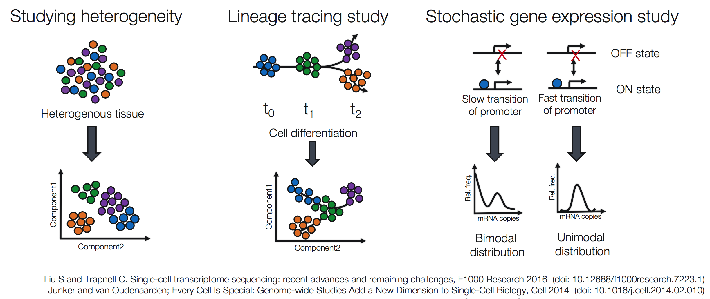
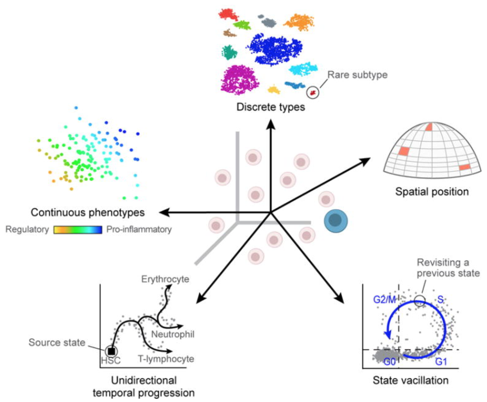

17 单细胞测序技术介绍
17.1 Why single-cell RNA-seq
Across human tissues there is an incredible diversity of cell types, states, and interactions. To better understand these tissues and the cell types present, single-cell RNA-seq (scRNA-seq) offers a glimpse into what genes are being expressed at the level of individual cells.

This exciting and cutting-edge method can be used to:
- explore which cell types are present in a tissue
- identify unknown/rare cell types or states
- elucidate the changes in gene expression during differentiation processes or across time or states
- identify genes that are differentially expressed in particular cell types between conditions (e.g. treatment or disease)
- explore changes in expression among a cell type while incorporating spatial, regulatory, and/or protein information

Single cell vs Bulk RNA Sequencing: The face-off。来源：Introduction to Single Cell RNA-sequencing: a practical guide
Popular methods to address some of the more common investigations include:

17.2 单细胞转录组测序技术及细胞分离技术分类汇总
在过去的十多年里，高通量测序技术被广泛应用于生物和医学的各种领域，极大促进了相关的研究和应用。其中转录组测序（RNA-seq）被广泛应用于测定和描绘各类物种的基因或转录本的表达情况。但传统的转录组测序技术（bulk RNA-seq）是基于群体细胞，每个样本包含成千上万个细胞，所以最终反映的是基因在群体细胞中平均表达水平，从而掩盖了不同细胞之间的表达异质性。近年来，单细胞转录组测序（single-cell RNA-seq，scRNA-seq）技术得到了蓬勃的发展，从而使得可在单细胞水平揭示全基因组范围内所有基因的表达情况，非常有利于研究细胞间的表达异质性。目前单细胞转录组测序技术（scRNA-seq）已经广泛应用于各类物种（特别是人、小鼠等）的不同类型组织和细胞系，包括正常和病变细胞等。自从2009年等由汤富酬等人开发出了第一种单细胞转录组测序技术，目前已经有几十种不同的单细胞转录组测序技术相继被开发出来，它们都有各自的特点，拥有特定的优势和缺点。为了正确利用相应的单细胞测序技术开展相关研究和应用，非常有必要充分了解这些不同技术的优缺点。
单细胞转录组测序技术的发展史(Svensson et al. NATURE PROTOCOLS, 2018)
细胞分离技术
进行单细胞测序前，首先需要分离单个的细胞，不同类型的单细胞转录组测序技术，使用的细胞分离技术可能不一样。总的来说，目前主要有以下几类细胞分离技术：
Micropipetting micromanipulation（口吸管技术）；
Laser capture microdissection（激光捕获显微切割技术）；
Fluorescence activated Cell Sorting，FACS（流式细胞仪技术）；
Microdroplets（微滴技术）；
Microfluidics（微流体技术）；
这几类技术的优缺点具体如下图所示：
单细胞转录组测序细胞分离技术分类及各自的优缺点(Kolodziejczyk et al. Molecular Cell, 2015)
单细胞转录组测序技术
单细胞转录组测序技术种类根据测序捕获的转录本序列范围主要可分为：
测全长转录本（full-length transcript sequencing）的技术（如Smart-seq2、MATQ-seq 、SUPeR-seq等）
优点：可测转录本的全长，基因数多，测序深度大，可进行各种类型的转录组测序数据分析
缺点：细胞通量少，价格较贵
只测转录本 3′ 或5′ 端（3′或5′-end sequencing）的技术（如10X Genomics, CEL-seq2, Drop-seq, inDrops等）
优点：细胞通量高，价格便宜；
缺点：只测转录本的一端，检测基因表达灵敏度较低，不适合进行可变剪接、等位基因表达等分析。
目前已有的主要单细胞转录组测序技术具体如下表所示 (Chen et al. Frontiers in Genetics, 2019)：
17.3 Challenges of scRNA-seq analysis
Prior to scRNA-seq, transcriptome analysis was performed using bulk RNA-seq, which is a straight-forward method for comparing the averages of cellular expression. This method can be a good choice if looking at comparative transcriptomics (e.g. samples of the same tissue from different species), and for quantifying expression signatures in disease studies. It also has potential for the discovery of disease biomarkers if you are not expecting or not concerned about cellular heterogeneity in the sample.
While bulk RNA-seq can explore differences in gene expression between conditions (e.g. treatment or disease), the differences at the cellular level are not adequately captured. For instance, in the images below, if analyzed in bulk (left) we would not detect the correct association between the expression of gene A and gene B. However, if we properly group the cells by cell type or cell state, we can see the correct correlation between the genes.

Image credit: Trapnell, C. Defining cell types and states with single-cell genomics, Genome Research 2015 (doi: https://dx.doi.org/10.1101/gr.190595.115)
Despite scRNA-seq being able to capture expression at the cellular level, sample generation and library preparation is more expensive and the analysis is much more complicated and more difficult to interpret. The complexity of analysis of scRNA-seq data involves:
- Large volume of data
- Low depth of sequencing per cell
- Technical variability across cells/samples
- Biological variability across cells/samples
We will explore each of these complexities in more detail below:
Large volume of data
Expression data from scRNA-seq experiments represent tens or hundreds of thousands of reads for thousands of cells. The data output is much larger, requiring higher amounts of memory to analyze, larger storage requirements, and more time to run the analyses.
Low depth of sequencing per cell
For the droplet-based methods of scRNA-seq, the depth of sequencing is shallow, often detecting only 10-50% of the transcriptome per cell. This results in cells showing zero counts for many of the genes. However, in a particular cell, a zero count for a gene could either mean that the gene was not being expressed or the transcripts were just not detected. Across cells, genes with higher levels of expression tend to have fewer zeros. Due to this feature, many genes will not be detected in any cell and gene expression will be highly variable between cells.
scRNA-seq data is often referred to as zero-inflated; however, recent analyses suggest that it does not contain more zeros than what would be expected given the sequencing depth (Valentine Svensson’s blog post). A more recent paper discussing modeling of scRNA-seq data is also available (Sarkar and Stephens 2021).
Biological variability across cells/samples
Uninteresting sources of biological variation can result in gene expression between cells being more similar/different than the actual biological cell types/states, which can obscure the cell type identities. Uninteresting sources of biological variation (unless part of the experiment’s study) include:
- Transcriptional bursting: Gene transcription is not turned on all of the time for all genes. Time of harvest will determine whether gene is on or off in each cell.
- Varying rates of RNA processing: Different RNAs are processed at different rates.
- Continuous or discrete cell identities (e.g. the pro-inflammatory potential of each individual T cell): Continuous phenotypes are by definition variable in gene expression, and separating the continuous from the discrete can sometimes be difficult.
- Environmental stimuli: The local environment of the cell can influence the gene expression depending on spatial position, signaling molecules, etc.
- Temporal changes: Fundamental fluxuating cellular processes, such as cell cycle, can affect the gene expression profiles of individual cells.

Image credit: Wagner, A, et al. Revealing the vectors of cellular identity with single-cell genomics, Nat Biotechnol. 2016 (doi:https://dx.doi.org/10.1038%2Fnbt.3711)
Technical variability across cells/samples
Technical sources of variation can result in gene expression between cells being more similar/different based on technical sources instead of biological cell types/states, which can obscure the cell type identities. Technical sources of variation include:
Cell-specific capture efficiency: Different cells will have differing numbers of transcripts captured resulting in differences in sequencing depth (e.g. 10-50% of transcriptome).
Library quality: Degraded RNA, low viability/dying cells, lots of free floating RNA, poorly dissociated cells, and inaccurate quantitation of cells can result in low quality metrics
Amplification bias: During the amplification step of library preparation, not all transcripts are amplified to the same level.
Batch effects: Batch effects are a significant issue for scRNA-Seq analyses, since you can see significant differences in expression due solely to the batch effect.

Image credit: Hicks SC, et al., bioRxiv (2015)
To explore the issues generated by poor batch study design, they are highlighted nicely in this paper.
How to know whether you have batches?Were all RNA isolations performed on the same day?
Were all library preparations performed on the same day?
Did the same person perform the RNA isolation/library preparation for all samples?
Did you use the same reagents for all samples?
Did you perform the RNA isolation/library preparation in the same location?
If any of the answers is ‘No’, then you have batches.
Best practices regarding batches:
Design the experiment in a way to avoid batches, if possible.
If unable to avoid batches:
Do NOT confound your experiment by batch:

Image credit: Hicks SC, et al., bioRxiv (2015)
DO split replicates of the different sample groups across batches (在不同批次中对不同的样品组进行拆分重复). The more replicates the better (definitely more than 2), if doing DE across conditions or making conclusions at the population level. If using inDrops, which prepares a single library at a time, alternate the sample groups (e.g. don’t prepare all control libraries first, then prepare all treatment libraries).

Image credit: Hicks SC, et al., bioRxiv (2015)
DO include batch information in your experimental metadata. During the analysis, we can regress out variation due to batch or integrate across batches, so it doesn’t affect our results if we have that information.
17.4 Conclusions
While scRNA-seq is a powerful and insightful method for the analysis of gene expression with single-cell resolution, there are many challenges and sources of variation that can make the analysis of the data complex or limited. Throughout the analysis of scRNA-seq data, we will try to account for or regress out variation due to the various sources of uninteresting variation in our data.
Overall, we recommend the following:
- Do not perform single-cell RNA-seq unless it is necessary for the experimental question of interest. Could you answer the question using bulk sequencing, which is simpler and less costly? Perhaps FACS sorting the samples could allow for bulk analysis?
- Understand the details of the experimental question you wish to address. The recommended library preparation method and analysis workflow can vary based on the specific experiment.
- Avoid technical sources of variability, if possible:
- Discuss experimental design with experts prior to the initiation of the experiment
- Isolate RNA from samples at same time
- Prepare libraries at same time or alternate sample groups to avoid batch confounding
- Do not confound sample groups by sex, age, or batch
snRNA-seq analyzes the expression profiles from nuclei, instead of intact cells. As you may expect, fewer transcripts are detected from the nuclei (~7,000 genes), compared to intact cells (~11,000 genes). In some situations (depending on your research materials and goals), snRNA-seq can be the preferred method as opposed to scRNA-seq.
Some advantages of snRNA-seq include:
Works well with hard-to-isolate samples (for example, adipocytes), as well as frozen tissues
Reduces transcriptional artifacts from the isolation process
Provides less biased cellular coverage
进一步了解单细胞测序技术的样本处理、平台类型、过程等，参阅：Introduction to Single Cell RNA-sequencing: a practical guide。